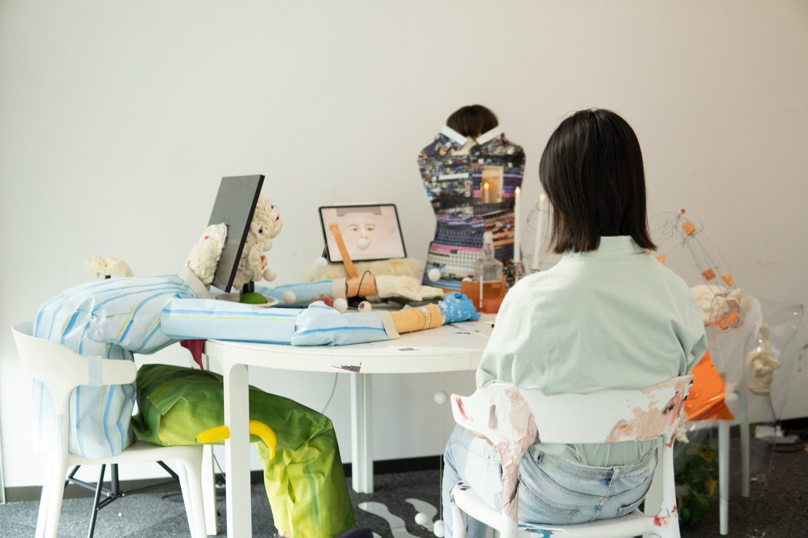
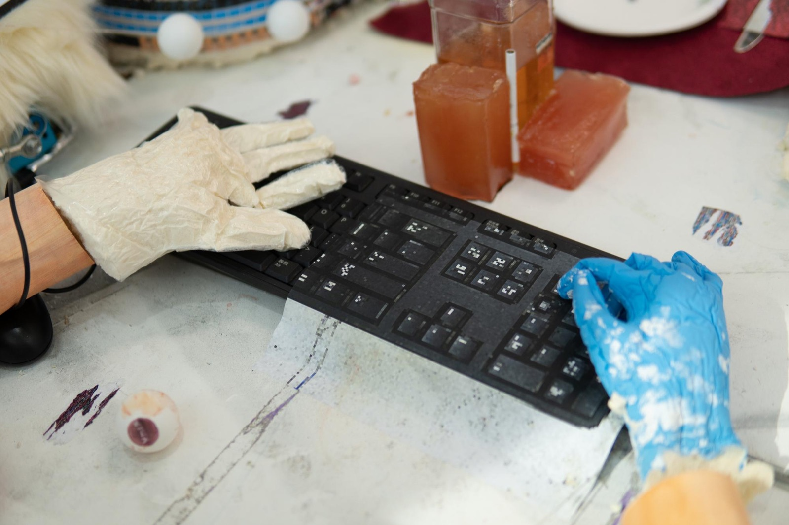
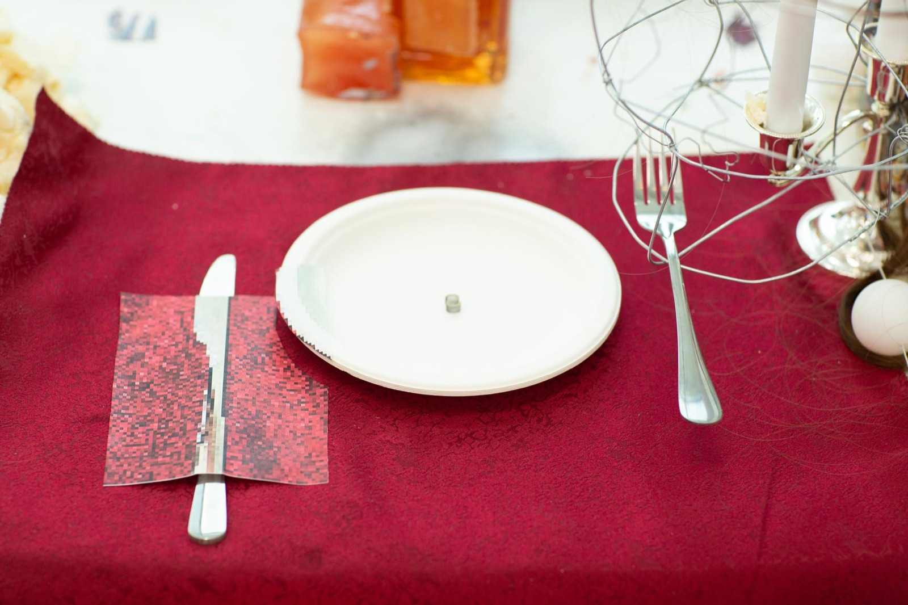
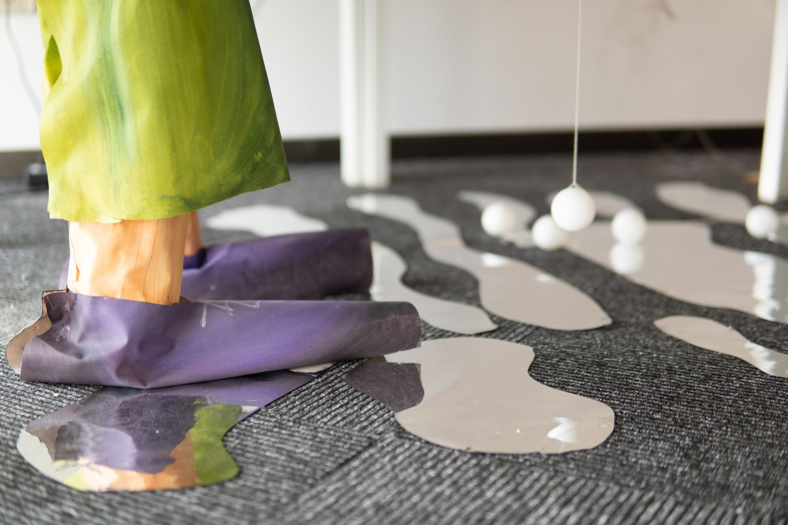
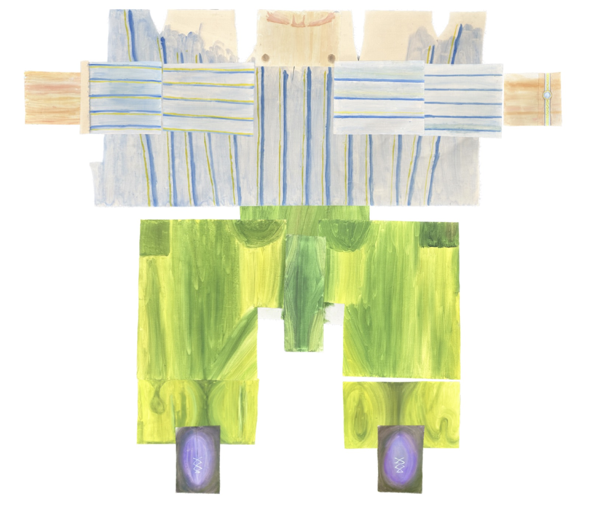
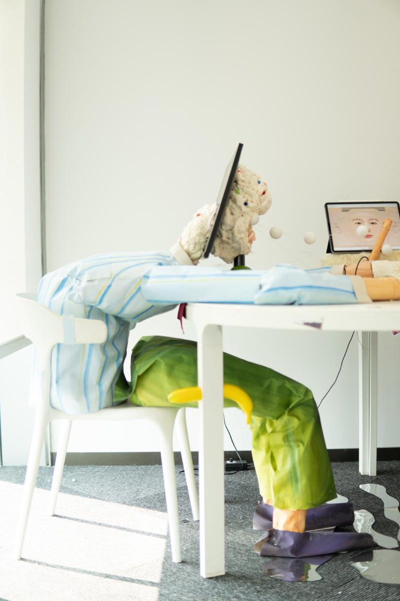
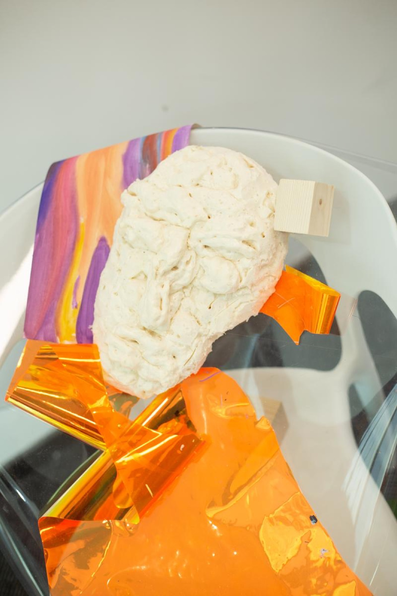

PROJECT 09 / 2022
Peregrinus
Installation
An installation bringing painting, screens and everyday objects into one space.
Mixed-media installation, 250 × 200 × 140 cm. Materials include canvas, oil painting, screens, furniture, mirrors, textiles and found objects.






